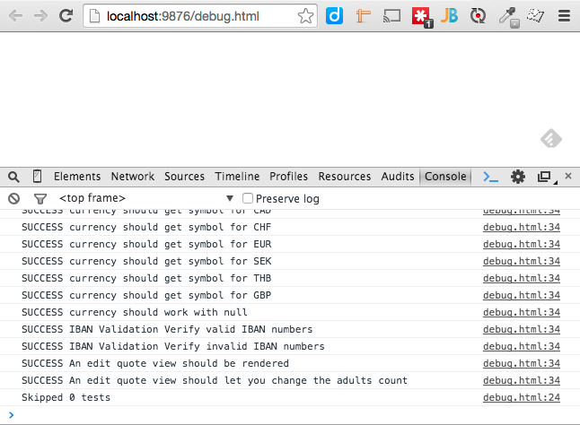

Run it!
grunt karma:dev
grunt karma:serve
Write a test
/* vr-supply/web/src/test/js/spec/example_spec.js */
define([
"chai",
"string_util"
], function(chai, sinon, StringUtil) {
describe("A string utility", function() {
it("should count words in a string", function() {
chai.assert.equal(
StringUtil.countWords("THIS. IS. SPARTA!!!"),
3
);
});
});
});
Debugging in the browser

Target one test
describe("A string utility", function() {
// More tests...
it.only("should count words in a string", function() {
chai.assert.equal(
StringUtil.countWords("THIS. IS. SPARTA!!!"),
3
);
});
// More tests...
});
Stubbing Ajax
describe("A User data access object", function() {
var server;
beforeEach(function() {
server = sinon.fakeServer.create();
server.respondImmediately = true;
});
afterEach(function() { server.restore(); });
it("should get a single user", function() {
server.respondWith("/users/123", [
200, { "Content-Type": "application/json" },
JSON.stringify({ name: "Bob" })
]);
var user = {};
UserDao.getUserById(123).done(function(data) {
user = data;
});
chai.assert.equal(user.name, "Bob");
});
});
Faking setTimeout
describe("A fading transition", function() {
it("should take 1 seconds to complete", function() {
clock = sinon.useFakeTimers();
// 1 second to complete fade in, 0 seconds in
fadeIn(el, 1000);
chai.assert.equal(getOpacity(el), 0);
// 0.5 seconds in should be 50% opaque
clock.tick(500);
chai.assert.equal(getOpacity(el), 0.5);
// 1 second in should be 100% opaque
clock.tick(500);
chai.assert.equal(getOpacity(el), 1);
clock.restore();
});
});
Faking Date
describe("A booking quote", function() {
var clock;
beforeEach(function() {
// "now" is 2015-06-01
clock = sinon.useFakeTimers(1433116800000);
});
afterEach(function() {
clock.restore();
});
it("should allow dates in the future", function() {
quote.setArrival("2015-07-01");
chai.assert.ok(quote.isValid());
});
it("should not allow dates in the past", function() {
quote.setArrival("2015-05-01");
chai.assert.notOk(quote.isValid());
});
});
DustJS
- All en-US templates loaded automatically on global
dust object
- Compile before running tests
- Recompile for changes to take effect
PhantomJS
- PhantomJS != Chrome/Firefox/IE
- See vr-supply/web/src/test/js/polyfill.js
Globals
- See vr-supply/web/src/test/js/globals.js